1、渠道链接配置
1.1、新增渠道链接
入口：在页面右上方点击【新增】按钮，进入新增渠道。
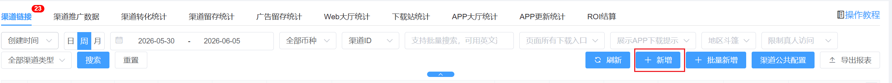
渠道名称：支持小写字母（大写字母会转成小写字母）、数字和-
渠道类型：渠道类型分成5类，即渠道链接、PWA快捷APP、WG游戏试玩链接、独立渠道包、原生马甲包、下载站源码。
渠道链接
1、链接直达位置类型：
直达链接位置：支持选择以下直达链接类型（生成的渠道链接，用户可直接通过该链接访问对应页面）。
直达大厅页链接：用户点击后直接进入大厅主页。
直达注册页链接：用户点击后直接跳转至注册页面。
直达活动页链接：用户点击后直接跳转至活动页面。
直达试玩页链接：用户点击后直接跳转至试玩页面。
直达下载站链接：用户点击后直接跳转至下载页面。
直达中转页链接：用户点击后直接跳转至中转页面。
2、强制绑定币种
强制绑定：即用户通过渠道注册，会强制绑定设置的币种，不允许修改币种。
不限制：即用户通过渠道注册，可以选择币种。
3、强制绑定语言
强制绑定：即用户首次通过渠道访问的页面，使用的渠道配置的语言，用户可以通过切换语言功能来进行切换。
不限制：即根据用户的机器语言>默认语言这样来进行展示，用户可以通过切换语言功能来进行切换。
4、web大厅域名
渠道配置的域名，数据来源于域名管理-web大厅域名设置。
5、强制绑定会员层级、强制绑定会员标签
即用户通过渠道注册之后会直接绑定渠道设置的会员层级和标签； 如果没有设置，则会走默认层级和默认标签。
特别说明：会员层级只是初始的层级，会按照层级规则进行升级。
6、强制绑定代理账号
- 选填，当填写了代理账号，代理账号的币种必须和渠道币种保持一致；
- 绑定代理之后，通过该渠道注册的会员会直接和该代理绑定上下级关系；
- 如果会员选择了其他渠道币种，则上下级关系无法绑定
7、手机号是否强制验证、邮箱是否强制验证
跟随安全中心配置：跟随 【会员-注册和验证-安全中心配置-注册时安全绑定】；
强制校验：则单独走渠道的配置，需要用户强制校验手机号和邮箱（说明：前提必须配置通道，否则无法验证）
8、投放地区限制
关闭/开启：默认为关闭功能，如果开启则只针对该配置地区投放。
9、地区斗篷
- 什么是斗篷：开启斗篷可以增加三方审核通过率，开启时真人和 搜索引擎机器人、访问投放链接看到页面都是脱敏的字符串。
- 使用场景：一般情况下是新设置的投放链接等待FB等三方广告商审核时，需要开启斗篷。
- 地区斗篷域名：即投放广告配置的斗篷域名，域名前缀通常由字母（a-z）、数字（0-9）和连字符（-）组成，长度1-63个字符，且不能以连字符开头或结尾.例如www.
- 地区斗篷跳转域名：即地区斗篷跳转的域名，这个是广告通过之后跳转的链接（该链接和渠道链接是一种类型。）
- 投放广告平台：即选择投放的平台，目前支持Facebook和tiktok
- 是否限制真人访问：特别注意广告审核通过后，一定要不限制真人访问，否则影响会真实用户。
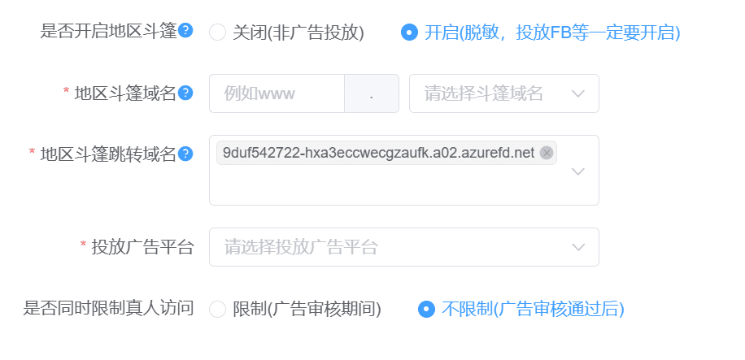
10、渠道链接埋点教程（仅需要在渠道配置即可）
推荐：直达大厅页，直达注册页，直达下载站三种
关于埋点，渠道链接推荐使用：转化API（S2S埋点），支持S2S的有Facebook，Kwai，Tiktok，AppsFlyer，Adjust
浏览器web埋点，不准将废弃！不建议继续使用浏览器（web埋点），理由：充值类事件，依赖websocket 推送，上报埋点的时候会丢失一些事件
10.1 Facebook推荐配置
系统推荐
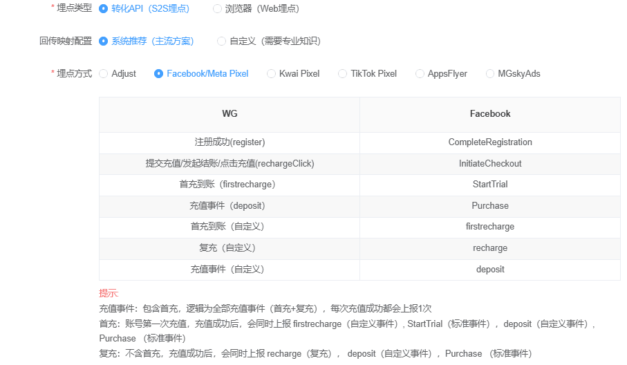
自定义推荐配置
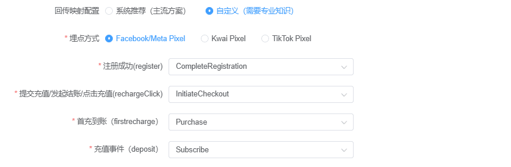
10.2 Kwai推荐配置
系统推荐
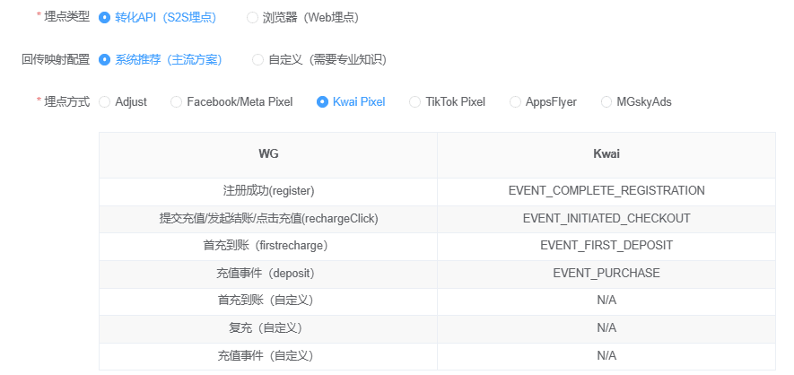
自定义推荐配置
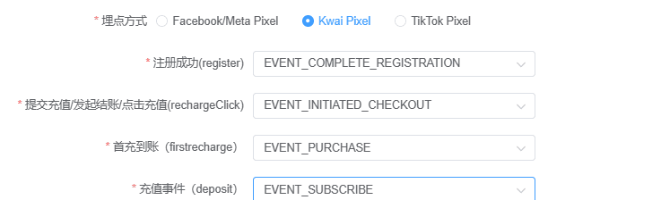
特别说明：kwai 跑广告之前，请先测试
- 只配置pixel id（浏览器web埋点）扫码测试即可
- 如果配置pixel+token （转化API S2S埋点） 红色字体就是手动拼接的，参数是kwai后台复制即可 链接拼&fixed.kwaiTestClickId=I5pNwxHZQovUigTMMa52xg
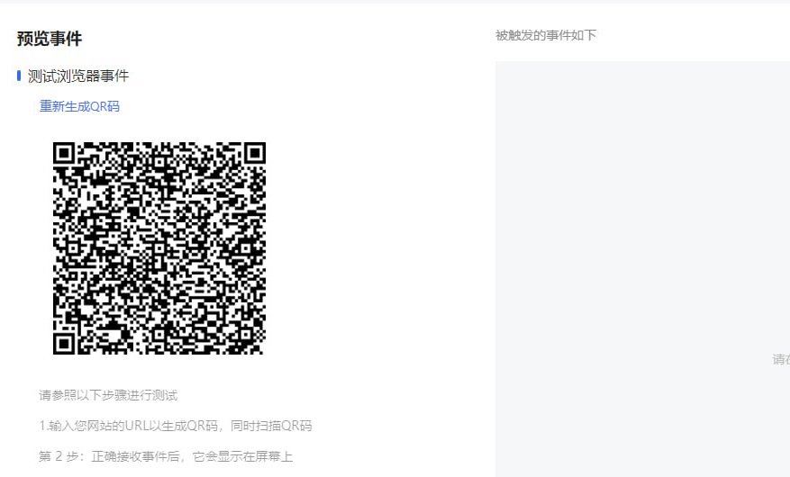
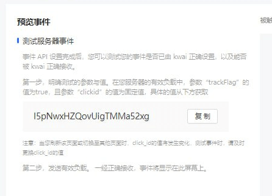
10.3、Tiktok推荐配置
系统推荐
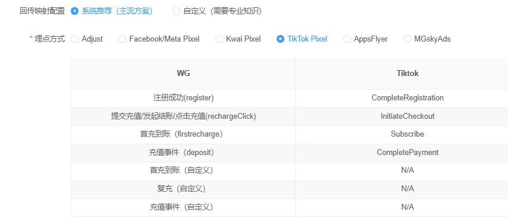
自定义推荐配置
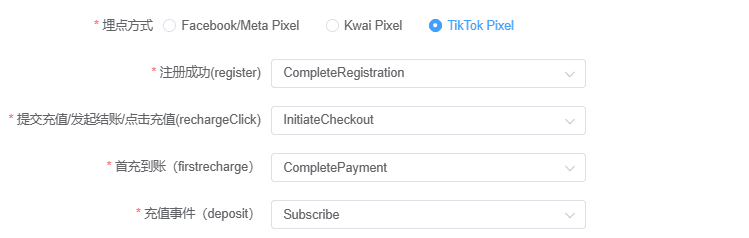
如果配置pixel+token （转化API S2S埋点） 链接拼&fixed.testEventCode=XXXXX
红色字体就是手动拼接的，参数是tiktok后台复制即可
10.4、AppsFlyer推荐配置
配置AF的Key和Bundie ID
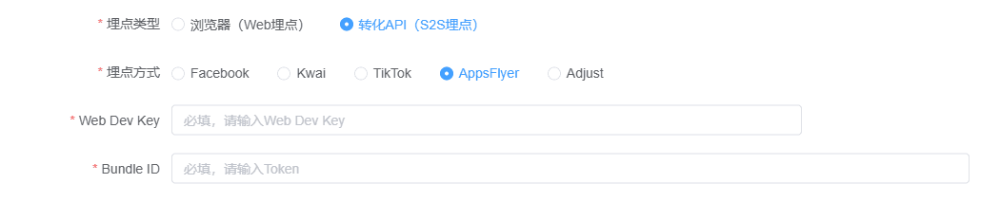
10.5 Adjust推荐配置
配置adjust后台对应的识别码
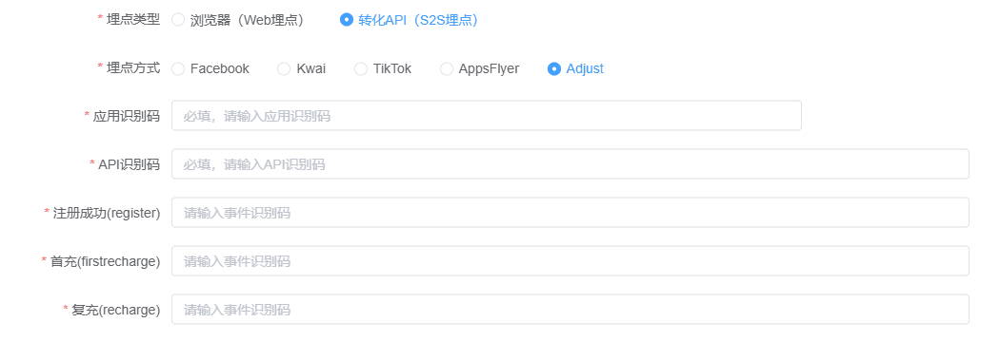
11、展示下载入口
开启/关闭：主要是控制web用户端是否展示下载APP的入口（仅限渠道，其他的不影响）
12、APP下载弹窗
即在渠道中是否展示APP下载，该配置是渠道特有的下载弹窗，不受其他的设置配置。
展示下载内容：多选，即可以展示PWA快捷APP、极速APP和原生APP
是否强制下载：
- 不强制：即用户可直接关闭弹出框
- 强制下载：弹窗不可关闭，但是如果用户下载了APP即可关闭弹窗
- 强制下载且引导只能使用APP：即无论是否下载了APP 都不允许关闭弹窗
弹窗展示规则：
- 会员注册天数：即会员注册的天数，0为注册之后之后就会弹窗
- 会员充值次数：0为未充值会员
- 会员提现次数：0代表未提现
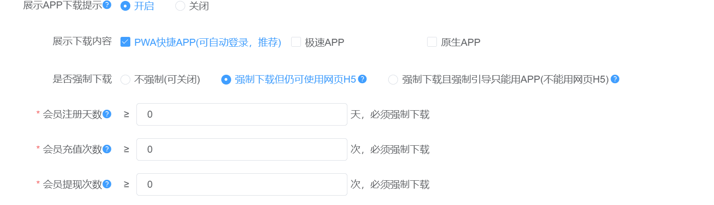
13、奖励领取条件
奖励领取条件：
- 不限制（包含临时账号）：即包含临时账号；
- 不限制：即除了临时账号之外的正式账号
- 仅限已首充：即进行过首充的正式账号
临时号奖励金额：即给临时号的奖励，临时号进入三方游戏最低余额必须大于临时号赠送金额。临时号是为了吸引充值，不能直接进入游戏，否则无法记录注单，且会引发大量额外账单
可领取奖励范围：即使用对应的操作端才可以领取奖励
PWA快捷APP
1、下载入口：即PWA的下载入口，可以配置在web大厅 和下载站
2、web大厅域名：下载了PWA之后访问的域名
3、进入后显示域名：推荐【隐藏】，下载PWA之后，导航栏是否进行隐藏
4、特别说明
- 当用户无法下载PWA时，系统会按照以下优先级下载：极速APP>原生APP
- 支持自动登陆，即用户下载并开启PWA之后，系统会在动登陆账号
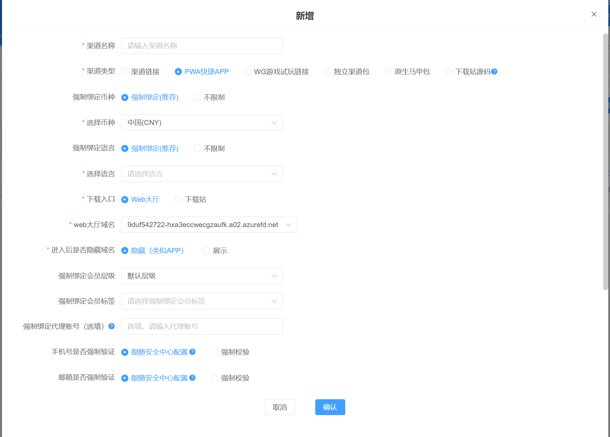
5、PWA的下载启动步骤
- 下载PWA：配置好渠道后，用户通过相应渠道下载PWA
- 安装完成后，双击即可以打开
6、下载PWA并启动
- 配置好渠道之后，用户通过对应的渠道会下载PWA，点击下载如下图所示：
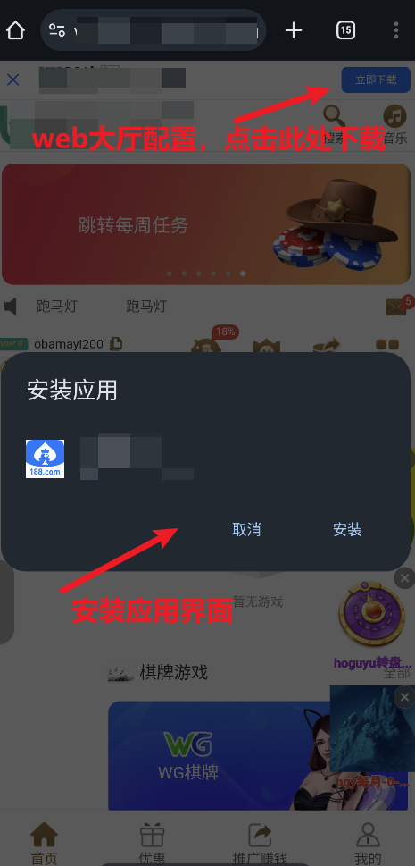
- 安装完成之后，点击对应的应用程序双击打开即可
- 双击打开之后，PWA的界面展示，至此PWA安装完成
WG试玩游戏链接
该页面功能主要是配置WG试玩游戏
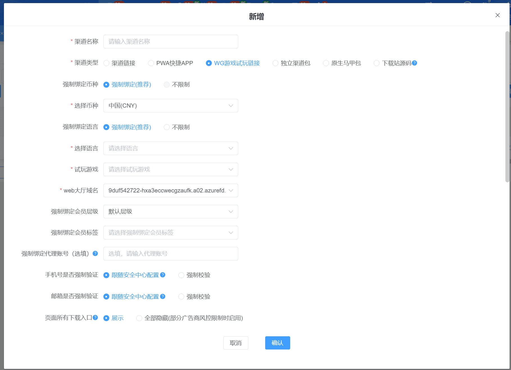
独立渠道包
功能描述：生成渠道专属的独立APP包
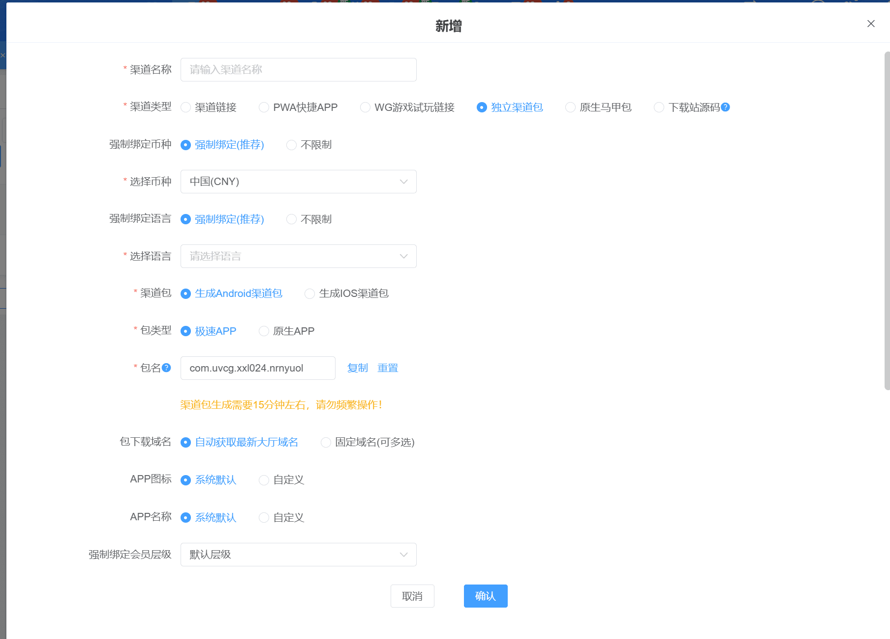
原生马甲包
1、功能描述：生成渠道专属的独立APP包，支持原生马甲包格式（APK或AAB）。
2、文件类型：
- AAB (Android App Bundles)：AAB是Android应用的打包新格式，从2021年8月起，谷歌商店要求所有新应用必须采用AAB格式上传。
注：我司的AAB原生马甲包已去除国产SDK，符合国际市场规范。 - APK (Android Application Package)：APK是传统的Android应用打包格式，适用于谷歌商店之外的其他应用商店或平台发布。
注：我司的APK原生马甲包同样去除了国产SDK，适合多渠道分发。
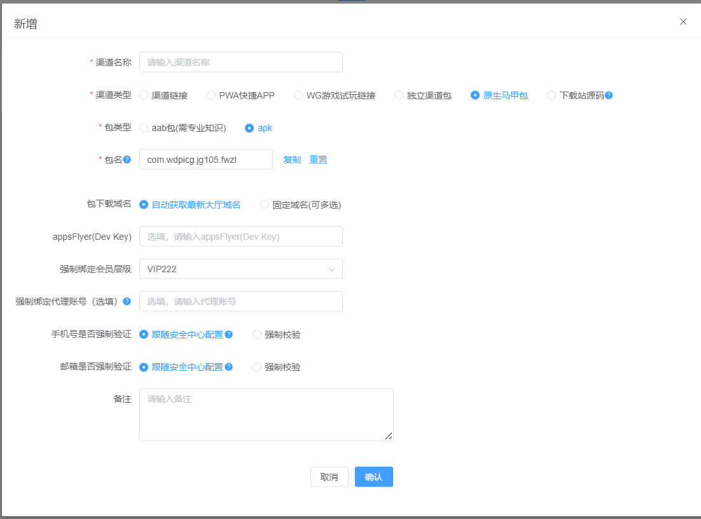
下载站源代码
1、功能描述：生成渠道的下载站源码，适用于多渠道推广和部署。
2、注意事项：
- 渠道名称：必须使用字母或字母与数字的组合，禁止使用中文。
- 源码生成：等待源码生成完成后，下载并解压，即可获取该渠道的下载站源码
- 同一版本的不同渠道下载站源码内容相同，唯一区别在于
config.json配置文件，因此一个源码可用于多个渠道推广。
3、生成操作
- 下载站源码：通过选择下载页面模板来生成渠道专属源码包。
- 模板选择：选择适合的下载模板后进行生成，确保与渠道需求匹配。
-
等待源码更新后，下载源码，进行解压，即可得到该渠道的下载站源码
因为同一个版本不通渠道的下载站源码完全相同，只有config.json 配置文件不同，所以同一个下载站源码可以用于多个渠道推广，下面会有使用说明
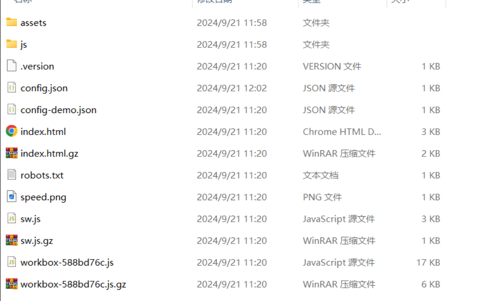
3、下载站源码部署
静态资源部署：解压后的源码为静态资源，可直接使用 Nginx 进行代理部署。以下是nginx参考配置：
HTTPS部署建议：
- 该处是用http，建议第三方使用 HTTPS 部署以提高安全性，同时配置 SSL 证书；
- 打包资源支持 gz压缩，请开启gz压缩优化访问体验，例如 nginx 配置：
gzip on;
4、下载站多渠道推广及域名配置
多渠道推广方式：
- 部署完成后，可通过同一域名加
cid参数进行渠道推广。 - 也可以配置域名和渠道id的映射，config.json配置参数如下：
注意事项：
- 默认的
config.json文件中包含cid,configData,siteCode参数，建议不要修改。 - 若需新增多渠道对应多个域名，可在
cidMap对象中添加域名和渠道ID的映射关系并保存。 - 示例文件可参考源码目录下的
config-demo.json。 - 渠道ID生效优先级：URL 参数
cid>cidMap映射cid>config.json文件中的cid参数。
若同一源码需用于多渠道推广
- 可通过在推广链接中添加或修改
cid参数实现。例如： - 若推广链接为
https://domain（不带cid参数），则默认使用config.json文件中的cid。 - 若推广链接为
https://domain?cid=788405，则此链接的推广渠道为788405。
1.2、渠道批量新增
功能描述：
支持一次性批量新增多条渠道链接和WG自营游戏链接，最多可以新增50条。用户可以在批量新增界面中输入渠道名称、类型和配置等必要信息。
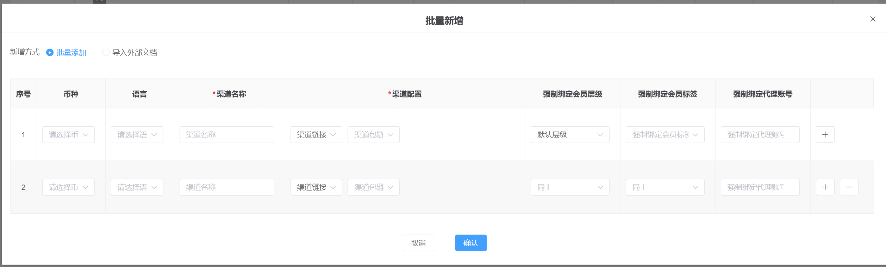
1.3、渠道的删除以及修改
1.修改：点击后直接修改选定的配置内容。适用于更新渠道信息或修改已有配置。操作步骤如下
（1）点击目标渠道条目的“修改”按钮。
（2）进入修改页面后，直接修改配置内容（如渠道名称等）。
（3）完成修改后，点击保存即可更新配置。
2. 删除：删除指定的渠道数据，点击后弹出确认框进行删除操作。此功能可以帮助用户删除不需要的渠道信息。操作步骤：
（1）在渠道列表中找到要删除的渠道条目。
（2）点击该条目的“删除”按钮。
(3)弹出确认框时，确认是否删除该条数据。
(4)确认删除后，该条数据将被移除。
1.4、批量操作
功能描述：批量操作功能允许用户对选中的多个数据条目进行统一修改或删除，减少重复操作并提高管理效率。
-
批量修改：用户可以选择多个数据条目后，统一修改这些条目的相关配置（如渠道名称等）。操作步骤如下
(1)在渠道列表中勾选需要修改的条目。
（2）点击批量修改按钮。
（3）进入修改页面后，调整所选条目的配置内容。
（4）完成修改后，点击保存即可批量更新选中的渠道条目。
-
批量删除：用户可以批量删除多个选中的渠道条目，避免一条一条删除的繁琐操作。操作步骤如下：
（1）在渠道列表中勾选需要删除的条目。
（2）点击批量删除按钮。
（3) 弹出确认框时，确认删除操作。
(4) 确认后，选中的渠道条目将被删除。
3.通用操作流程：
(1)选择条目：用户勾选一个或多个渠道条目。后来通过这个小小的
(2)选择操作：用户选择相应的操作（修改或删除）。
(3)执行操作：执行所选操作并确认。
二、渠道推广数据
该模块为统计当前站点或品牌的充值金额、首充金额、当前注册首充、二充、提现、充值差、投注、奖励、修正补单的数据以及对应的人次。
渠道：分成有渠道和无渠道；有渠道为通过渠道管理新增的渠道；无渠道为：官网、推广注册、代理开户、后台添加、银商开户、API开户、俱乐部注册、俱乐部推广注册和俱乐部注册
直推数据：即通过渠道或无渠道类型中直接注册注册的
裂变数据：即通过直推注册用户后推广产生的注册的数据
总数据：直推数据+裂变数据
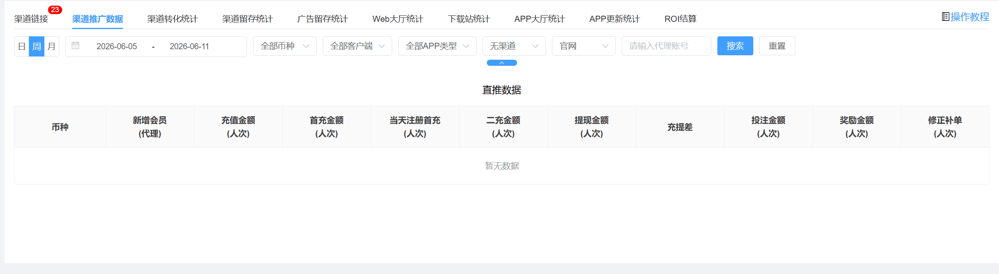
三、渠道转化统计
1 功能描述：该功能允许用户查看渠道转化统计数据，包括访问量和下载量。报表提供了小计和总计两种统计方式，小计是当前页面的数据统计结果，总计则是所有数据的总和。
2 主要功能：查看各个渠道的转化情况，帮助分析渠道效果。
(1)小计：显示当前页面的转化数据。
(2)总计：显示查询结果的所有数据的合计。
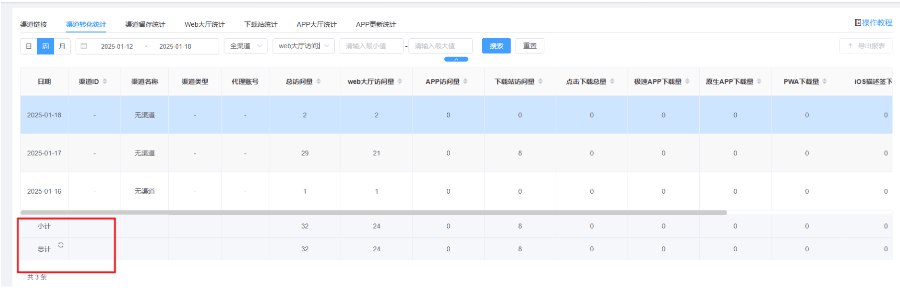
三、渠道留存统计
1 功能描述：渠道留存统计帮助用户分析各渠道用户的留存情况。与转化统计类似，报表中增加了小计和总计两个字段，分别表示当前页面和所有数据的统计。
2 主要功能：查看每个渠道的用户留存情况，评估渠道的长期效果。
(1)小计：当前页面展示的渠道留存数据。
(2) 总计：查询出的所有渠道数据的总留存量。
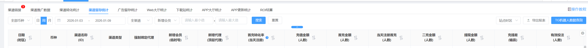
3 主要功能：通过TG发送指令可以查询对应渠道昨日和今日数据。
(1)TG机器人：调用运营管理中TG通知的机器人发送对应消息，不发送时区默认查询站点时区数据
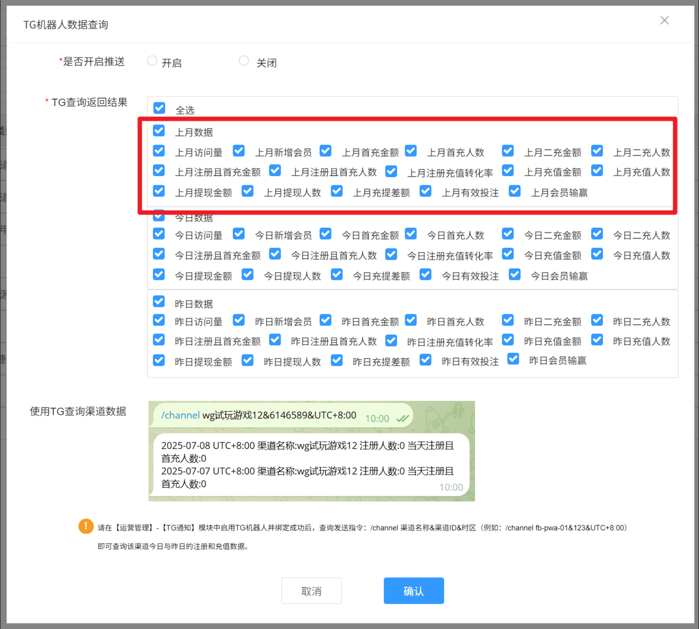
四、Web大厅统计
1 功能描述：Web大厅统计按照娱乐城和俱乐部维度统计示APP、桌面快捷方式、iOS描述签等的下载量总和，IP不去重。报表中包括小计和总计，为用户提供详细的统计信息。
2 主要功能：查看Web大厅中所有的下载量，帮助分析用户下载行为。
(1)小计：当前页面显示的下载数据。
(2)总计：所有数据的下载量总和。
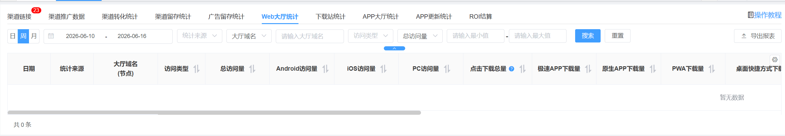
五、下载站统计
1 功能描述：下载站统计功能提供关于下载站的统计数据，帮助用户监控下载流量和下载来源等信息。与其他报表类似，显示小计和总计。
2 主要功能：查看下载站的相关统计信息，包括访问量、下载量等。
(1)小计：当前页面下载站数据的合计。
(2) 总计：所有下载站数据的总合。
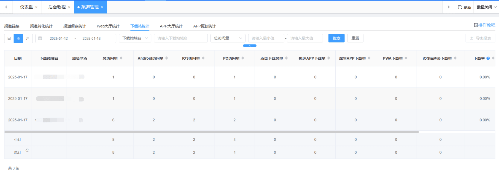
六、APP大厅统计
1 功能描述：APP大厅统计功能帮助用户查看通过APP大厅下载的统计数据，包括各渠道的下载数量等。报表中提供了小计和总计。
2 主要功能：查看APP大厅的相关下载数据，帮助分析APP的整体表现。
(1)小计：显示当前页面APP下载数据。
(2)总计：显示所有数据的APP下载总量。
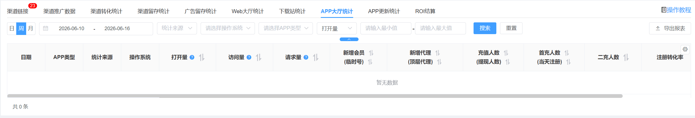
七、APP更新统计
1 功能描述：APP更新统计显示各渠道的APP更新情况，包括更新次数和更新量等。提供小计和总计字段，分别表示当前页面数据和所有数据的统计结果。
2 主要功能：查看APP更新的详细统计数据，帮助监控APP版本的推广情况。
(1) 小计：当前页面的APP更新数据。
(2) 总计：所有APP更新数据的总和。
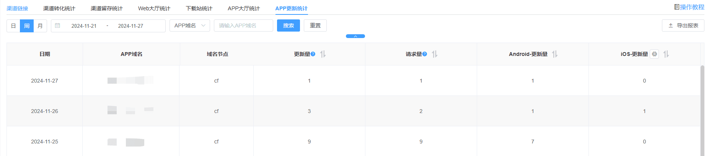
八、ROI结算
1 功能描述：业主查看投资回报率（return on investment，简称ROI）。注：1、填写消耗后会计算该消耗产生的ROI。统一换算USDT进行统计 2、业主需要记录在第三方平台上的推广投入，然后将此数据输入ROI结算模块，如此就可以精确统计出此次推广活动的投资回报率（ROI）了。
2 主要功能：查看投资回报率，帮助监控的推广情况。
(1) 统计时间：点击弹窗展示该渠道该时间范围内的单日数据。
(2) 总消耗：该渠道时间范围内的总的推广金额
(2) X天充值（X日提现、充提差额）：当天新增的用户，在当天及后2天内进行的充值和提现及充提差额
(3) X天充值ROI：当天推广新增的用户，X天内充值总金额/单日消耗
(4) X天营收ROI：当天推广新增的用户，X天内充值总金额-X天内提现总金额/单日消耗
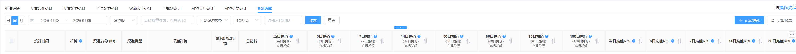
(2) 记录消耗：记录使用什么推广渠道花费多少金额。注：选择某个时间范围会将 选择的天数除消耗广告费金额=单日消耗
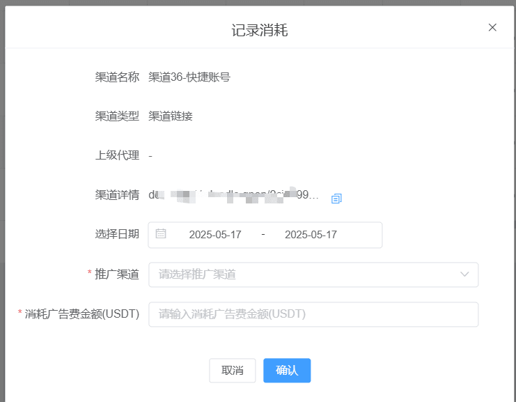